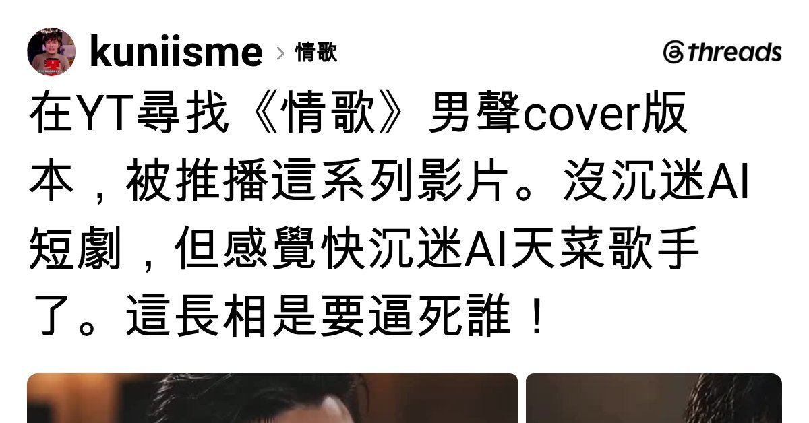

Threads｜AI 天菜歌手與推薦演算法：一則無法辨識來源的觀看筆記

一句話摘要
AI 歌手最容易讓人沉迷的，往往不是單一首歌，而是推薦系統把聲音、臉孔、角色感與連續更新綁成可反覆追看的內容流。當來源沒有被清楚標示時，喜歡可以保留，但身分、聲音來源與授權不能自行腦補。
貼文留下的可確認資訊
作者表示自己原本在 YouTube 尋找〈情歌〉的男聲 cover，隨後被平台推薦一系列影片；作者將其中角色形容為「AI 天菜歌手」，並表達對其外貌與內容的強烈好感。
可取得的貼文文字與封面只識別出作者帳號 `kuniisme`、歌曲名稱〈情歌〉及「男聲 cover」這個搜尋脈絡。畫面沒有足以辨識的 YouTube 頻道、影片標題、AI 歌手名稱、製作人、模型、原曲權利資訊或外部連結。
不能據此推論的事項
- 不能確認這些影片是否確實由 AI 生成，或只是經過後製、虛擬形象演出或真人翻唱。
- 不能辨識任何特定「AI 歌手」、真人原型或聲音來源。
- 不能確認歌曲／伴奏／聲音／肖像是否經權利人同意與授權。
- 不能判斷 YouTube 推薦是由搜尋字詞、觀看紀錄、地區、帳號偏好或其他訊號造成。
觀看與分享前的四個檢查
- 找到原始影片頁與頻道 About 頁，確認頻道是否標示合成內容、演唱與影像製作方式。
- 檢查影片說明欄是否列出原曲作者、詞曲／錄音權利、翻唱授權或 AI 聲音的來源說明。
- 若角色長相或聲音明顯像現實人物，不要把「很像」當成可自由模仿或轉傳的同意；避免用未經證實的名字替內容貼標。
- 轉傳時保留「來源未辨識」與「可能是合成內容」的說明，尤其不要將其宣稱為某位真人演唱、官方帳號或獲授權作品。
為何值得記錄
這則貼文捕捉到生成式娛樂的典型入口：使用者不是主動尋找 AI，而是在既有的歌曲搜尋中被推薦系統帶往可視化、角色化的 AI 內容。對創作者而言，持續的人設、視覺一致性與翻唱選曲可能比單次生成品質更能形成黏著；對觀眾而言，清楚的 AI 標示與來源資訊，才是既能享受內容又能保持判斷的前提。